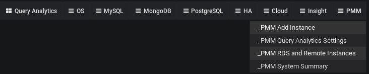
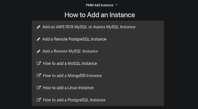
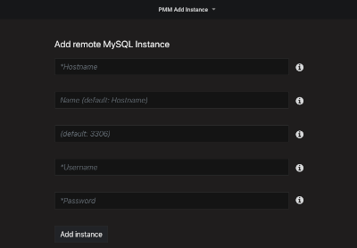
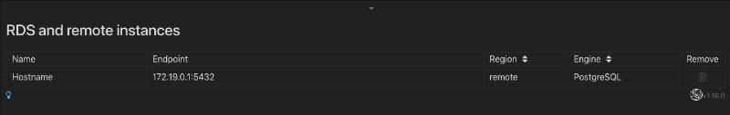
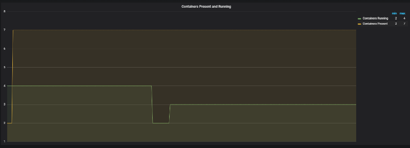

Percona Monitoring and Management 1.16.0
-
Date
November 1, 2018
PMM (Percona Monitoring and Management) is a free and open-source platform for managing and monitoring MySQL, MongoDB, and PostgreSQL performance. You can run PMM in your own environment for maximum security and reliability. It provides thorough time-based analysis for MySQL and MongoDB servers to ensure that your data works as efficiently as possible.
This release offers three new features for both the Community and Percona Customers:
- Agentless PMM support - Use PMM Server to gather Database Metrics and Queries from remote instances with no PMM Client installed!
- Query Analytics + Metric Series – See Related Database activity alongside queries
- Simplify metrics collections
We addressed 11 new features and improvements, and fixed 21 bugs.
Agentless PMM support for MySQL and PostgreSQL
You’re now able to connect PMM Server to your MySQL and PostgreSQL instances, whether they run in a cloud DBaaS environment, or under Operating Systems which are not natively supported by PMM (e.g. Windows), or when you do not have shell access to the server. This can help you get up and running with PMM using minimal configuration and zero client installation, however be aware there are limitations - there won’t be any host-level dashboards populated for these nodes since we don’t attempt to connect to the provider’s API nor are we granted access to the instance in order to deploy an exporter.
How to use
You’ll be able to collect Metrics and Queries from MySQL, and Metrics from PostgreSQL. You can add remote instances by selecting the PMM Add Instance item in a PMM Dropdown group of the system menu:

where you will then have the opportunity to add a Remote MySQL or Remote PostgreSQL instance:

You’ll add the instance by supplying just the Hostname, database Username and Password (and optional Port and Name):

Also new as part of this release is the ability to display nodes you’ve added, on screen RDS and Remote Instances:

Server activity metrics in the PMM Query Analytics dashboard
The Query Analytics dashboard now shows host and database activity graphs linked to the queries listed in a summary table. This brings a view of System Activity (CPU, Disk, and Network) and Database Server Activity (Connections, Queries per Second, and Threads Running) to help you better pinpoint query pileups and other bottlenecks.

Extending metrics with node_exporter textfile collector
While PMM provides an excellent solution for system monitoring, sometimes you may have the need for a metric that’s not present in the list of node_exporter metrics out of the box. There is a simple method to extend the list of available metrics without modifying the node_exporter code. It is based on the textfile collector. We’ve enabled this collector as on by default, and it is deployed as part of linux:metrics in PMM Client.
The default directory for reading text files with the metrics is /usr/local/percona/pmm-client/textfile-collector, and the exporter reads files from it with the .prom extension. By default it contains an example file example.prom which has commented contents and can be used as a template.
You are responsible for running a cronjob or other regular process to generate the metric series data and write it to this directory.
Example – collecting docker container information
This example will show you how to collect the number of running and stopped docker containers on a host. It uses a crontab task, set with the following lines in the cron configuration file (e.g. in /etc/crontab):
*/1 * * * * root echo -n "" > /tmp/docker_all.prom; docker ps -a -q | wc -l | xargs echo node_docker_containers_total >> /usr/local/percona/pmm-client/docker_all.prom;
*/1 * * * * root echo -n "" > /tmp/docker_running.prom; docker ps | wc -l | xargs echo node_docker_containers_running_total >> /usr/local/percona/pmm-client/docker_running.prom;
The result of the commands is placed into the docker_all.prom and docker_running.prom files and read by exporter and will create two new metric series named node_docker_containers_total and node_docker_containers_running_total, which we’ll then plot on a graph:

New Features and Improvements
- PMM-3195: Remove Color scheme switch in favor of the UI Theme chooser in Preferences
- PMM-3194: Change link for “Where do I get the security credentials for my Amazon RDS DB instance?”
- PMM-3189: Include Remote MySQL & PostgreSQL instance logs into PMM Server logs.zip system
- PMM-3166: Convert status integers to strings on ProxySQL Overview Dashboard – Thanks, Iwo Panowicz for https://github.com/percona/grafana-dashboards/pull/239
- PMM-3133: Include Metric Series on Query Analytics Dashboard
- PMM-3078: Generate warning “how to troubleshoot postgresql:metrics” after failed pmm-admin add postgresql execution
- PMM-3061: Provide Ability to Monitor Remote MySQL and PostgreSQL Instances
- PMM-2888: Enable Textfile Collector by Default in node_exporter
- PMM-2880: Use consistent favicon (Percona logo) across all distribution methods
- PMM-2306: Reconfigure instance automatically after the EBS volume size increase
- PMM-1358: Improve Tooltips on Disk Space Dashboard – thanks, Corrado Pandiani for texts
Fixed Bugs
- PMM-3202: Cannot add remote PostgreSQL to monitoring without specified dbname
- PMM-3186: Strange “Quick ranges” tag appears when you hover over documentation links on PMM Add Instance screen
- PMM-3182: Some sections for MongoDB are collapsed by default
- PMM-3171: Remote RDS instance cannot be deleted
- PMM-3159: Problem with enabling RDS instance
- PMM-3127: “Expand all” button affects JSON in all queries instead of the selected one
- PMM-3126: Last check displays locale format of the date
- PMM-3097: Update home dashboard to support PostgreSQL nodes in Environment Overview
- PMM-3091: postgres_exporter typo
- PMM-3090: TLS handshake error in PostgreSQL metric
- PMM-3088: It’s possible to downgrade PMM from Home dashboard
- PMM-3072: Copy to clipboard is not visible for JSON in case of long queries
- PMM-3038: Error adding MySQL queries when options for mysqld_exporters are used
- PMM-3028: Mark points are hidden if an annotation isn’t added in advance
- PMM-3027: Number of vCPUs for RDS is displayed incorrectly – report and proposal from Janos Ruszo
- PMM-2762: Page refresh makes Search condition lost and shows all queries
- PMM-2483: LVM in the PMM Server AMI is poorly configured/documented – reported by Olivier Mignault and lot of people involved. Special thanks to Chris Schneider for checking with fix options
- PMM-2003: Delete all info related to external exporters on pmm-admin list output
How to get PMM Server
PMM is available for installation using three methods:
- Docker Hub –
docker pull percona/pmm-server– Documentation - AWS Marketplace – Documentation
- Open Virtualization Format (OVF) – Documentation